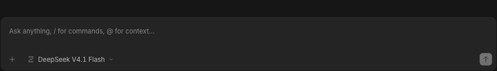
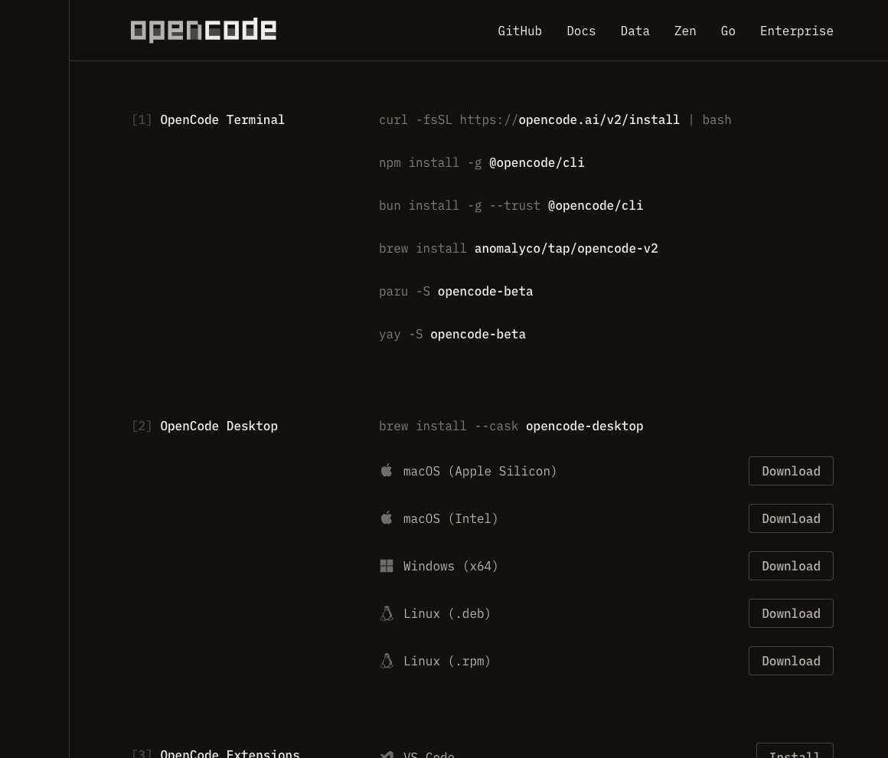
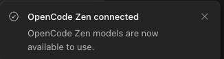
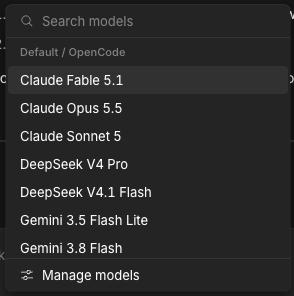
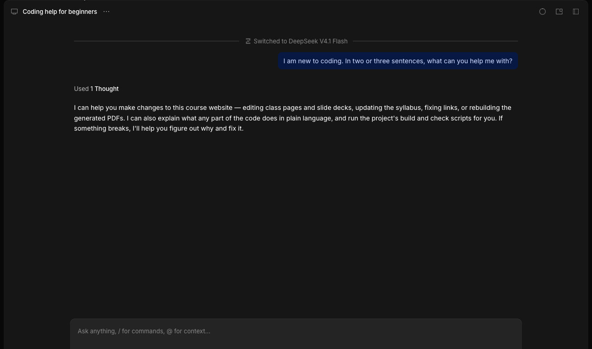

Beginner's Guide · macOS & Windows · No experience needed
Making with AI OpenCode + DeepSeek V4.1 Flash
Download the OpenCode app, connect it to OpenCode Zen, and start asking questions. No terminal, no coding — just a normal app.
About 15 minutes
For macOS & Windows
Provider: OpenCode Zen
Model: DeepSeek V4.1 Flash

The OpenCode message box, with DeepSeek V4.1 Flash already selected. This is where you type your questions.
OpenCode is an AI helper that runs as an app on your computer. You type to it in plain English, and it can explain code, help with class projects, and walk you through technical tasks. DeepSeek V4.1 Flash is the AI "brain" that writes the answers, and OpenCode Zen is the service that connects the app to it.
Think of it this way: OpenCode is your phone, OpenCode Zen is your phone company, and DeepSeek V4.1 Flash is the person you're calling. This guide sets all three up. You won't need to use a terminal or write any code.
Why DeepSeek V4.1 Flash for this class?
Built for this work — it's designed for reasoning and agentic coding with reliable tool use, so it can genuinely help with your class projects.
Open weights — the model itself is openly licensed and inspectable, which fits a making class better than a closed black box.
Big context, tiny cost — it can read entire files (up to 1M tokens) for a fraction of a cent per question, so our shared class budget lasts the term.
One connection — because Zen gives us access to it, you set up one account and one key, and you can explore other models later without starting over.
What you'll need
A laptop running macOS 13 or newer, or Windows 10 or 11
An internet connection
Your Tufts email — the class invitation goes to it, and you sign in with it in Step 3
Nothing to pay — the class budget covers AI usage for your coursework
New word alert.OpenCode Zen is the OpenCode team's service that gives one account access to a set of AI models they have tested and chosen. Instead of signing up with each model company separately, you connect Zen once and pick a model.
1
Download the OpenCode app
Open your browser and go to opencode.ai/download.
Under OpenCode Desktop, click the download for your computer: macOS (Apple Silicon or Intel) or Windows (x64).
The download starts — you'll find the file in your Downloads folder.

Figure 1. The download page. Under OpenCode Desktop, pick the installer for your computer — the page lists both macOS and Windows.
2
Install the app
On a Mac:
Open the downloaded file (click it in your Downloads folder, or in the notification Safari shows).
A small window opens showing the OpenCode icon and your Applications folder.
Drag the OpenCode icon onto the Applications folder, exactly like the arrow shows.
Close that window, then open OpenCode from your Applications folder (or press ⌘+Space, type OpenCode, and press Enter).
On Windows:
Open your Downloads folder and double-click the OpenCode installer (the file ends in .exe).
Follow the prompts. If Windows shows "Windows protected your PC", click More info, then Run anyway.
When it finishes, open OpenCode from the Start menu: press the Windows key, type OpenCode, and press Enter.
Your computer warns you about the app? That's the standard message for apps downloaded from the internet. On a Mac, right-click (or Control-click) OpenCode in Applications, choose Open, and confirm. On Windows, click More info → Run anyway. The app is signed and comes directly from opencode.ai.
3
Accept your class invitation
Your instructor adds you to the class workspace on OpenCode Zen using your Tufts email. The invitation arrives by email, and you accept it once.
Check your Tufts inbox for an invitation to the class workspace and click the link in it.
Sign in with your Tufts email (for example yourname@tufts.edu). Using the Google button skips creating a separate password.
You land in the class workspace, which is named for the course (for example ENT-164 Intro to Making).
Use your Tufts email. The workspace is tied to the tufts.edu domain. If you sign in with a different email, you won't see the class workspace or be able to use the class budget.
4
Copy your own API key
An API key is a long password that lets the app use OpenCode Zen on your behalf. It starts with sk- for a personal key (a team service account key starts with oc_sk_). Treat it like a bank password: don't share it or post it anywhere.
In the same browser, go to the OpenCode Console at opencode.ai/console and sign in if it asks.
Make sure your class workspace is the one selected, then open the API keys section.
Copy your key — or click Create API key first if you don't have one yet, and copy it then (the site shows it only once). Paste it somewhere temporary — Notes or Notepad is fine — for the next step.
You don't need to add money or a card: the class budget covers your usage.
Your access is on the class budget. The instructor pays for AI usage through a shared class budget, so there's nothing for you to buy. Because that budget is shared, please keep your questions focused on class work and avoid long, off-topic chats — that keeps it available for everyone through the term.
5
Connect OpenCode Zen in the app
Open OpenCode and click Settings in the panel on the left.
Click Providers in the settings list.
Under Popular providers, find OpenCode — it's the entry described as "Curated models including Claude, GPT, Gemini and more" — and click Connect.
When the dialog asks how to sign in, choose API key.
Paste your sk-… key into the box and click Continue.
Figure 2. The Connect OpenCode Zen dialog. Paste the key you copied in Step 4 and click Continue.

Figure 3. Success — a message in the corner confirms OpenCode Zen connected. You only do this once; the app remembers the key.
6
Choose DeepSeek V4.1 Flash
Click the model button under the message box (it shows the model you're using, such as Big Pickle), then:
Type v4.1 in the search box at the top of the panel.
If it doesn't appear, click Manage models at the bottom, search v4.1, and turn on the switch next to DeepSeek V4.1 Flash. Then close that panel and pick it in the model list.

Figure 4. In the model list, type v4.1 and click DeepSeek V4.1 Flash, listed under OpenCode. Manage models is the last row if you need to switch it on first.
Did it work? The button under the message box now shows DeepSeek V4.1 Flash. That's the model every new question will use.
7
Ask your first question
Click the message box at the bottom that says "Ask anything…".
Type a question in plain English, for example: "I'm new to coding. What can you help me with?"
Press Enter (or click the arrow button at the right) and wait a few seconds.

Figure 5. Your question appears in the bubble on the right; the answer gets written below it. The model's name is always visible under the message box.
To quit: on a Mac, press ⌘+Q; on Windows, close the window or press Alt+F4. To come back later, just open OpenCode again — your conversations are saved as tabs at the top.
If something goes wrong
What you see
What to do
Your computer won't open the app
Mac: in Applications, right-click (Control-click) OpenCode and choose Open, or use System Settings → Privacy & Security → Open Anyway. Windows: in the installer warning, click More info → Run anyway.
No invitation email
Check your Tufts inbox's spam folder, and confirm your instructor has your correct tufts.edu address. Invitations can be sent again.
Can't find the provider panel
Click Settings in the left panel, then Providers. Everything provider-related is reached from there.
OpenCode (Zen) isn't in the list
It's in Popular providers near the top. If you still don't see it, click Show more providers.
Can't find the API keys page
Sign in at opencode.ai/console with your Tufts email and make sure your class workspace is selected in the workspace menu.
"Invalid API key"
The key was copied incompletely. Copy it again from the Console and paste it once more, starting with sk-.
An error about credits or balance
Don't add credit yourself. Check that the class workspace is selected in the Console, then tell your instructor — the shared class budget may be out of funds.
DeepSeek V4.1 Flash isn't in the list
Use Manage models in the model panel, search v4.1, and switch it on.
No answer, or it seems stuck
Wait ten seconds — the first reply can be slow. Check your internet, then ask again. Quitting and reopening the app also helps.
Words you'll see
OpenCode
The app on your computer where you chat with the AI.
OpenCode Zen
The service that connects the app to a tested set of AI models. Needs an account and an API key.
API key
A secret password (starts with sk-) that lets the app use your OpenCode Zen account. Never share it.
Provider
The company or service that runs the AI connection — here, OpenCode Zen.
Model
The specific AI "brain" you talk to — here, DeepSeek V4.1 Flash.
Where everything lives
What you want
Where to click
Accept the class invitation
The link in the email your instructor sent to your Tufts address
Copy or create your API key
opencode.ai/console → your class workspace → API keys
Connect or fix your provider
Settings → Providers → OpenCode → Connect
Start a new conversation
The + next to the tabs at the very top
Change the model
The model button under the message box (shows "DeepSeek V4.1 Flash")
Show more models in the list
Model button → Manage models
Quit the app
Mac: ⌘+Q · Windows: close the window or Alt+F4
Things to try in your first week
You don't need to know any code to start. Ask in plain English:
You can ask
What you get
"I'm new to coding. What can you help me with?"
A plain-language list of what the AI can do, and where to start.
"Explain this like I've never seen it before"
Any file or concept broken down step by step, in beginner terms.
"Draw me a wiring diagram for connecting an LED to my ESP32"
A labelled breadboard picture — after you add the class tools guide.
"Help me prepare my Onshape sketch for the laser cutter"
Checks and fixes so your DXF is ready for Nolop.
"Walk me through my class project"
The next concrete step, with the reasons behind it.
Once you're comfortable, the official docs at opencode.ai/docs show what else OpenCode can do. There's no rush — asking questions is a great way to learn.


 ENT-164 · Intro to Making — OpenCode + DeepSeek V4.1 Flash beginner's setup guide for macOS & Windows · Screenshots from a live install · September 26, 2026
ENT-164 · Intro to Making — OpenCode + DeepSeek V4.1 Flash beginner's setup guide for macOS & Windows · Screenshots from a live install · September 26, 2026